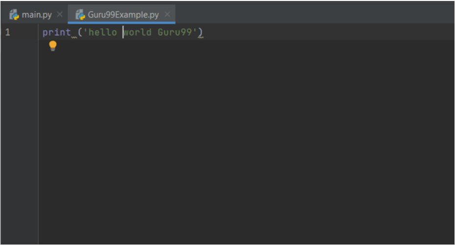
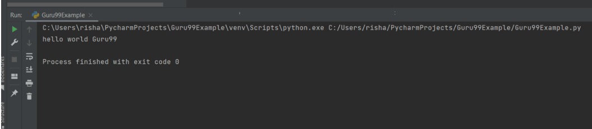
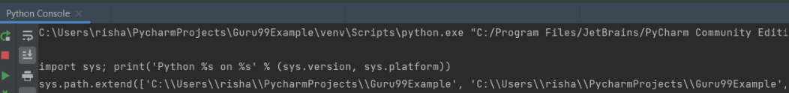
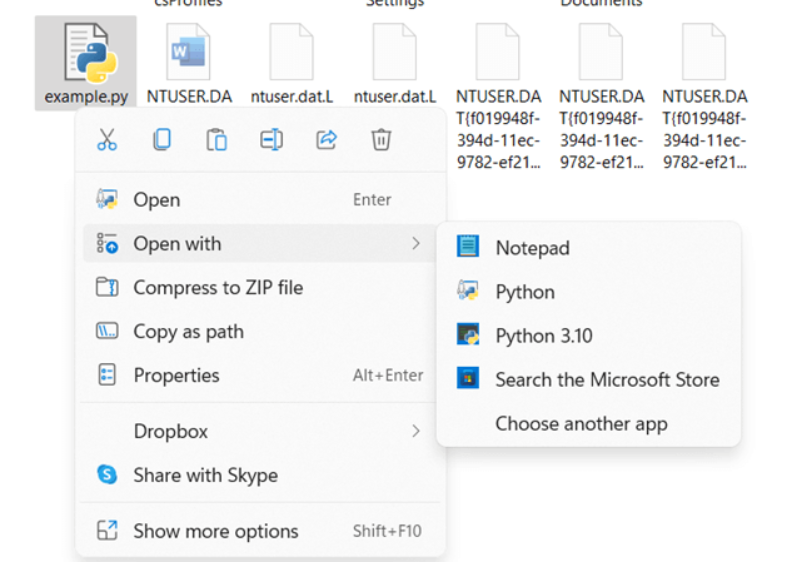
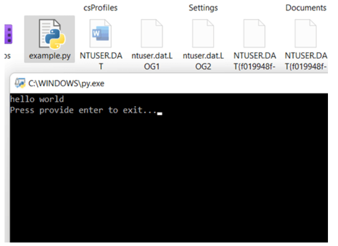
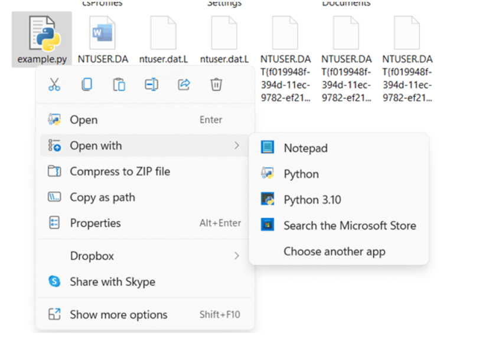
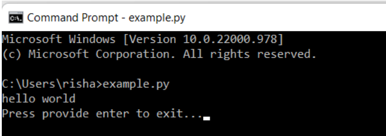
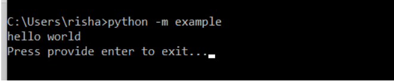
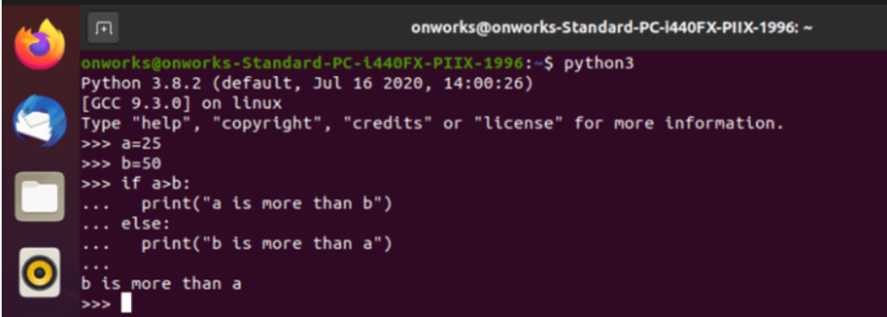
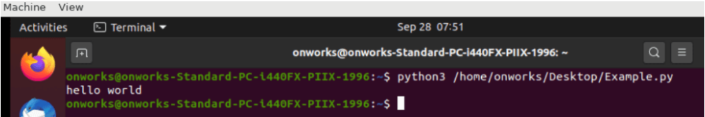

How to Run Python Scripts: Step by Step Guide
What is the Script in Python?
A script in Python can be defined as a file that consists of Python code or a program. It ends with an extension as .py
An interpreter can execute a script in two distinct ways, as listed below: –
>> A script can be executed as a module or as a script itself.
>> A code that is written in an interactive Python command prompt session manner.
How to run Python code and scripts interactively?
Here are steps to do this:
Step 1) The programmer must open the command line in the interactive mode.
Step 2) In the next step, invoke the python interpreter in the command line by typing the following command: –
Command:
python
Step 3) The programmer can sequentially write Python code and execute them in the same order.
The following program can be typed in the command line as shown below:
Example: –
Python Code:
python
print ('hello world')
Output:
hello world
Let us take another Python code that could be written in the command line interactively.
Example: –
Python Code:
Python
a=25
b=50
if a > b:
... print ("a is more than b")
... else:
... print ("b is more than a")
...
b is more than a
>>>
Output:
b is more than a
Following is the screenshot: –

Explanation:
The above code compares two arguments and finds which argument is greater. Ensure the statements are properly indented to avoid indentation errors. To exit the windows commanded line, press Ctrl+Z and follow with an Enter.
How to run Python script files interactively from Windows GUI?
Here are steps to do this:
Step 1) Open the command line and type the Python command followed by the script file name.
Step 2) Ensure that the script file is already created.
Step 3) The script file should end with either .py or. pyw. As a next step, open the Windows command prompt.
Following would be the code to be written in the command line to invoke a Python script:
Python Command line Code:
Python example.py
Output:
Hello, world!
How to run Python scripts from an IDE
An integrated development environment is also referred to as IDE in short form. It offers a virtual setup of file and folder hierarchy. It allows the programmer to build Python projects quickly. IDE provides the organization of files into different folders.
These different folders belong to one common directory.
Spyder and PyCharm are two Python IDEs that enable the programmer to run Python programs.
Let us take an example of executing a Python script in PyCharm IDE:
Step 1) As the first step, create a new project in PyCharm.
Step 2) Name the project as Guru99Example and then click create.
Step 3) Select the Root folder that would be labeled as Guru99Example and do a right click.
Step 4) Go to the new option and create a new Python file.
Step 5) Give the name of the Python file Here we have given Guru99Example.
Step 6) In the blank Python file created in PyCharm IDE, write the following piece of code as shown below: –
Python Code:
print ('hello world')
Step 7) To run the above code, right-click on the editor and select the option “Run File in Python console”.
This code will open the console window within IDE, and the following would be the output:
Output:
PyDev console: starting.
Python 3.10.6 (tags/v3.10.6:9c7b4bd, Aug 1 2022, 21:53:49) [MSC v.1932 64 bit (AMD64)] on win32
>>> runfile('C:/Users/OS Name/PycharmProjects/ASURA/Example.py', wdir='C:/Users/OS Name/PycharmProjects/Example')
hello world
Following is the Screenshot:
  Explanation:
The above code is a simple example of how to print hello world in the PyCharm IDE.
How to run Python scripts using a file manager?
Here are the steps to run the Python script using file manager:
Step 1) Open Notepad and add some Python code.
Step 2) Type print (‘Hello World’)
Step 3) Save the script file with extension as either .py or. pyw.
Step 4) .py extension file is used for programs that have Python.exe.
Step 5) In the windows operating system, right-click the Python file and click open. Refer to the below
screenshot: –
When executed, it opens a command line screen for a moment. Refer to the below screenshot: –
To ensure the screen remains for a while, add the following statement in the Python script file as shown below: –
Python Code:
input ('Press provide enter to exit...')
Until and unless there is no input from the user, the screen continues to run and display Python output.
However, if the Python script has some error, the execution of the input command is interrupted or aborted. Due to this, the user may not be able to see Python script execution using file manager.
screenshot: –
How to run Python scripts using script file name and command line?
Here are the steps to run the Python script using script file name and command line:
Step 1) Open Notepad and add some Python code.
Step 2) Type print (‘Hello World’)
Step 3) Save the script file with extension as either .py or. pyw.
Step 4) .py extension file is used for programs that have Python.exe.
Step 5) In the windows operating system, right-click the Python file and click copy as the path. Refer to the below
screenshot: –
It helps to validate the path of the script file with the command line path. Open a command line and type the script file name as created above with the name followed by the extension .py. Refer to the below screenshot: –
Alternatively, the script file created above can be run as a python module. Type the following command as shown below: –
Code:
python -m example
Output:
hello world
Press provides enter to exit...
Refer to the following screenshot:
Explanation:
The above code follows the following syntax:
Syntax:
Python -m
The above -m parameter searches for the sys. Path for the module referred to and executed the code as part of the _main_.
How to run Python Scripts on Linux
Here are steps to do this:
Step 1) The programmer must open the Linux terminal in the interactive mode.
Step 2) In the next step, invoke the Python interpreter in the Linux terminal by typing the following command: –
Command:
python3
Step 3) The programmer can sequentially write Python code and execute them in the same order.
The following program can be typed in the command line as shown below:
Example: –
Python Code:
python3
a=25
b=50
if a > b:
... print ("a is more than b")
... else:
... print ("b is more than a")
...
b is more than a
>>>
Output:
b is more than a
Following is the screenshot: –
Alternatively, Here are the steps to run the Python script file using a Linux terminal:
Step 1) Open the text editor and add some Python code.
Step 1) Type print (‘Hello World’)
Step 1) Save the script file with extension as.py.
Step 1) .py extension file is used for programs that have Python.exe.
Step 1) In the next step, invoke the Python interpreter in the Linux terminal by typing the following command: –
Command:
python3 /home/onworks/Desktop/Example.py
Output:
hello world
Following is the screenshot: –
Explanation:
The python interpreter in the Linux terminal runs the script file that is saved at the desktop location.
Comparison of code, module, and script in Python
In the world of computing, the following is the comparison between module, code, and script:
| Parameters | Code | Module | Script |
|---|---|---|---|
| Definition | A code is defined as a series of instructions. | A module is defined as a series of codes arranged sequentially. | A script can be defined as a file that comprises logical orders or a batch of organized codes. |
| Executability | They are run through the Python interpreter | They are imported first in a script or a piece of code and then executed using the Python interpreter | The scripts are generally run through a Python interpreter. |
FAQ
❓ What is Python Interpreter?
A Python interpreter can be considered an interface or a bridge that helps execute code or a script. It runs the code in two manners:
- >> It invokes a script or a module.
- >> It invokes a code written in an active session.
Python interpreter works in the following manner: –
- >> It reads the command followed by its evaluation.
- >> Post evaluation, it prints the results of the command.
- >> It loops backward and performs the repetition of the process.
🏅 Types of Python Interpreters
A Python interpreter is available in several forms, as listed below:
| Interpreter | Description |
|---|---|
| Jython | Using Java programming language, Python programs can be run on java-based platforms. |
| PyPy | Interpreter designed in a Python programming language. |
| CPython | Interpreter designed using C language to run and execute Python programs in C-based platforms |
| IronPython | It is an open-source project which used as an interpreter for .Net platforms. |
⚡ How does the Python interpreter execute scripts?
The Python script is run under the multi-step process defined as Python Execution Model. Under this model, the statements defined in the script are processed and executed step-by-step.
In the last step of the execution process, the Python virtual machine loads the bytecode in the run time to execute the script.
🌟 What Do you Need to Run a Python Script?
Following are the basic requirements needed to execute a Python Script:
- >> Make the Python script executable and install the interpreter beforehand on the computer.
- >> You should have a code editor or an integrated development environment pre-installed in the computer’s operating system.
- >> Add Python beforehand to execute code through the command line to the operating system environment variable.
Conclusion:
- >> A Python script can be executed using several methods.
- >> You can execute using the command line or using IDE.
- >> The programmer can use PyCharm and Spyder IDE to develop sophisticated Python scripts.
- >> Ensure that the code adheres to indentation when using the if and else statements in the command line.